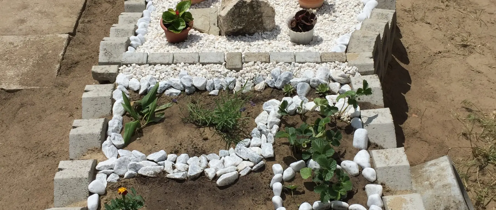

Miben keres megoldást?
A szennyvízkezelés kérdése ritkán önmagában érkezik — mindig egy konkrét élethelyzethez kapcsolódik. Alább hét tipikus helyzet szerepel. Válassza ki azt, amelyik a legközelebb áll az Önéhez: mindegyiknél azzal kezdünk, mit kell először tisztázni, és csak utána jön a megoldás.

Helyzetek
Melyik áll a legközelebb az Ön helyzetéhez?
A helyzetek átfedhetik egymást. Ha kettő is illik Önre, kezdje azzal, amelyik időben előbb van — a telek kérdései például megelőzik a berendezés kiválasztását.
-
Nincs elérhető közcsatorna
Az ingatlan nem köthető rá a közműhálózatra, és nem világos, milyen megoldások jöhetnek egyáltalán szóba.
Nincs közcsatorna -
Telekvásárlás vagy új építés előtt állok
A szennyvízkezelés a telek alkalmasságán múlik. Ezt vásárlás vagy tervezés előtt érdemes tisztázni, nem utána.
Telek és új építés -
Meglévő emésztőt szeretnék kiváltani
A szippantási költség nő, vagy a rendszer nem felel meg. A csere csak akkor indokolt, ha a felmérés is ezt támasztja alá.
Emésztő kiváltása -
Nyaraló vagy szezonálisan használt ingatlan
A hosszú távollét más követelményt támaszt, mint az állandó lakhatás. Nem minden technológia bírja jól.
Nyaraló, szezonális -
Családi házhoz keresek rendszert
Adott a ház és a háztartás létszáma; a kérdés a megoldástípus, a kapacitás és a telepíthetőség.
Családi ház -
Vállalkozás vagy intézmény számára keresek megoldást
Panzió, étterem, iskola, kemping vagy üzem: itt a csúcsterhelés és a szennyvíz összetétele dönt, nem a létszám önmagában.
Vállalkozás, intézmény -
Már van rendszerem, segítségre van szükségem
Üzemeltetési kérdés, hibajelenség, alkatrész vagy szerviz: ezek az Ügyféltámogatás területére tartoznak.
Már van rendszerem
Közös vonás
Ami mind a hét helyzetben ugyanaz
Bármelyik ágon indul el, ugyanaz a négy kérdés dönti el, mi valósítható meg. Ezért kérjük ugyanazokat az adatokat minden esetben.
-
Mennyi szennyvíz keletkezik és milyen ütemben. Nem a ház mérete számít, hanem a tényleges terhelés és annak ingadozása — az állandó és az időszakos használat két különböző feladat.
-
Hová kerül a kezelt víz. Ez a legtöbb projektben a szűk keresztmetszet: talajba szikkasztás, felszíni befogadó vagy öntözési hasznosítás — mindegyiknek más a feltétele.
-
Mit enged a telek. Talajszerkezet, talajvízszint, lejtés, beépítettség, meglévő közművek és a szomszédos kutak helyzete együtt szűkíti a lehetőségeket.
-
Milyen engedélyezési feltételek vonatkoznak a területre. Ez településenként eltér, és felülírhat minden más szempontot — például vízbázisvédelmi területen.
Gyakori kérdések
Amit a leggyakrabban kérdeznek
Melyik helyzettel kezdjem, ha több is illik rám?
Azzal, amelyik időben előbb van. A telek alkalmassága például megelőzi a berendezés kiválasztását: ha a telek nem enged talajba jutást, a megoldástípusok fele eleve kiesik.
Muszáj minden adatot előre összeszednem?
Nem. A tájékozódáshoz elég a település neve, az ingatlan használati módja és a háztartás létszáma. A részletes adatokra csak a méretezésnél és az ajánlatnál lesz szükség.
Meg tudják mondani előre, mennyibe fog kerülni?
Nagyságrendet igen, végleges árat nem. A végösszeget a telepítési körülmények mozgatják leginkább — a földmunka, a bekötés mélysége és a kezelt víz elhelyezésének módja. Ezeket helyszíni felmérés nélkül nem lehet felelősen megmondani.